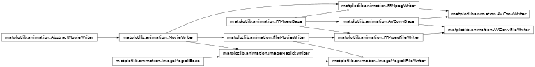
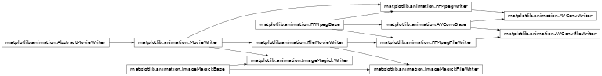

Version 2.2.0
Table of Contents
The easiest way to make a live animation in matplotlib is to use one of the
Animation classes.
FuncAnimation |
Makes an animation by repeatedly calling a function func. |
ArtistAnimation |
Animation using a fixed set of Artist objects. |
In both cases it is critical to keep a reference to the instance
object. The animation is advanced by a timer (typically from the host
GUI framework) which the Animation object holds the only reference
to. If you do not hold a reference to the Animation object, it (and
hence the timers), will be garbage collected which will stop the
animation.
To save an animation to disk use Animation.save or Animation.to_html5_video
See Helper Classes below for details about what movie formats are supported.
FuncAnimation¶The inner workings of FuncAnimation is more-or-less:
for d in frames:
artists = func(d, *fargs)
fig.canvas.draw_idle()
fig.canvas.start_event_loop(interval)
with details to handle ‘blitting’ (to dramatically improve the live performance), to be non-blocking, not repeatedly start/stop the GUI event loop, handle repeats, multiple animated axes, and easily save the animation to a movie file.
‘Blitting’ is a old technique in computer graphics. The
general gist is to take an existing bit map (in our case a mostly
rasterized figure) and then ‘blit’ one more artist on top. Thus, by
managing a saved ‘clean’ bitmap, we can only re-draw the few artists
that are changing at each frame and possibly save significant amounts of
time. When using blitting (by passing blit=True) the core loop of
FuncAnimation gets a bit more complicated
ax = fig.gca()
def update_blit(artists):
fig.canvas.restore_region(bg_cache)
for a in artists:
a.axes.draw_artist(a)
ax.figure.canvas.blit(ax.bbox)
artists = init_func()
for a in artists:
a.set_animated(True)
fig.canvas.draw()
bg_cache = fig.canvas.copy_from_bbox(ax.bbox)
for f in frames:
artists = func(f, *fargs)
update_blit(artists)
fig.canvas.start_event_loop(interval)
This is of course leaving out many details (such as updating the
background when the figure is resized or fully re-drawn). However,
this hopefully minimalist example gives a sense of how init_func
and func are used inside of FuncAnimation and the theory of how
‘blitting’ works.
The expected signature on func and init_func is very simple to
keep FuncAnimation out of your book keeping and plotting logic, but
this means that the callable objects you pass in must know what
artists they should be working on. There are several approaches to
handling this, of varying complexity and encapsulation. The simplest
approach, which works quite well in the case of a script, is to define the
artist at a global scope and let Python sort things out. For example
import numpy as np
import matplotlib.pyplot as plt
from matplotlib.animation import FuncAnimation
fig, ax = plt.subplots()
xdata, ydata = [], []
ln, = plt.plot([], [], 'ro', animated=True)
def init():
ax.set_xlim(0, 2*np.pi)
ax.set_ylim(-1, 1)
return ln,
def update(frame):
xdata.append(frame)
ydata.append(np.sin(frame))
ln.set_data(xdata, ydata)
return ln,
ani = FuncAnimation(fig, update, frames=np.linspace(0, 2*np.pi, 128),
init_func=init, blit=True)
plt.show()
The second method is to us functools.partial to ‘bind’ artists to
function. A third method is to use closures to build up the required
artists and functions. A fourth method is to create a class.
ArtistAnimation¶The provided writers fall into a few broad categories.
The Pillow writer relies on the Pillow library to write the animation, keeping all data in memory.
PillowWriter |
The pipe-based writers stream the captured frames over a pipe to an external process. The pipe-based variants tend to be more performant, but may not work on all systems.
FFMpegWriter |
Pipe-based ffmpeg writer. |
ImageMagickFileWriter |
File-based animated gif writer. |
AVConvWriter |
Pipe-based avconv writer. |
The file-based writers save temporary files for each frame which are stitched into a single file at the end. Although slower, these writers can be easier to debug.
FFMpegFileWriter |
File-based ffmpeg writer. |
ImageMagickWriter |
Pipe-based animated gif. |
AVConvFileWriter |
File-based avconv writer. |
Fundamentally, a MovieWriter provides a way to grab sequential frames
from the same underlying Figure object. The base
class MovieWriter implements 3 methods and a context manager. The
only difference between the pipe-based and file-based writers is in the
arguments to their respective setup methods.
The setup() method is used to prepare the writer (possibly opening
a pipe), successive calls to grab_frame() capture a single frame
at a time and finish() finalizes the movie and writes the output
file to disk. For example
moviewriter = MovieWriter(...)
moviewriter.setup(fig=fig, 'my_movie.ext', dpi=100)
for j in range(n):
update_figure(n)
moviewriter.grab_frame()
moviewriter.finish()
If using the writer classes directly (not through Animation.save), it is
strongly encouraged to use the saving context manager
with moviewriter.saving(fig, 'myfile.mp4', dpi=100):
for j in range(n):
update_figure(n)
moviewriter.grab_frame()
to ensures that setup and cleanup are performed as necessary.
Animation |
This class wraps the creation of an animation using matplotlib. |
TimedAnimation |
Animation subclass for time-based animation. |
A module-level registry is provided to map between the name of the
writer and the class to allow a string to be passed to
Animation.save instead of a writer instance.
MovieWriterRegistry |
Registry of available writer classes by human readable name. |
To reduce code duplication base classes
AbstractMovieWriter |
Abstract base class for writing movies. |
MovieWriter |
Base class for writing movies. |
FileMovieWriter |
MovieWriter for writing to individual files and stitching at the end. |
and mixins
AVConvBase |
Mixin class for avconv output. |
FFMpegBase |
Mixin class for FFMpeg output. |
ImageMagickBase |
Mixin class for ImageMagick output. |
are provided.
See the source code for how to easily implement new MovieWriter classes.
 
